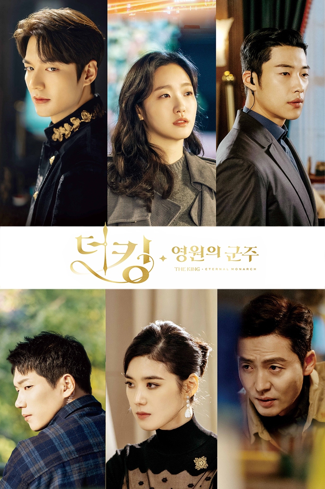
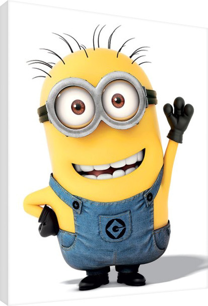
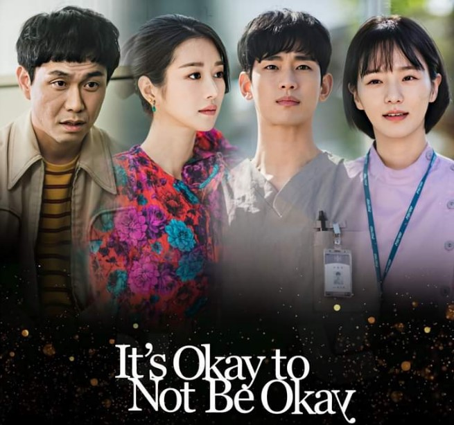

The king: Eternal Monarch is a 2020 romantic-fantasy south korean television series starring Lee Min-ho, Kim
Go-eun, Woo Do-hwan, kim kyung-nam, Jung Eun-chae. Produced by Hwa&Dam pictures and its parent company Studio Dragon, the series performed on SBS TV and Netflix for the global audience on April 17, 2020
Despite hailing as one of the most anticipated series in the first half of 2020 due to its snsemble cast, renowed screen writer, extensive publicity and more than 30 billions won production budget, the series received criticim for its screenplay, directing, editing and various controversies.
The Powerpuff Girls is an American superhero animated television series created by animator Craig McCracken for Cartoon Network, and the fifth of the network's Cartoon Cartoons. The series was produced by Hanna-Barbera Productions in its first four seasons, and by Cartoon Network Studios in its final two seasons. It centers on Blossom, Bubbles, and Buttercup, three kindergarten-aged girls with superpowers.

Minions premiered on June 11, 2015, in Leicester Square, London, and went into general release in the United States on July 10, 2015.
Minions is a 2015 American 3D computer-animated comedy film, serving as a spin-off prequel to the Despicable Me franchise. Produced by Illumination Entertainment for Universal Pictures, it was directed by Pierre Coffin and Kyle Balda, written by Brian Lynch, and produced by Chris Meledandri and Janet Healy. The film stars the voices of Coffin (as the Minions, including Kevin, Stuart, and Bob), Sandra Bullock, Jon Hamm, Michael Keaton, Allison Janney, Steve Coogan, and Jennifer Saunders, with narration by Geoffrey.

It's Okay to Not Be Okay (Korean RR: Saikojiman gwaenchana; lit. Psycho But It's Okay) is a 2020 South Korean romantic television series starring Kim Soo-hyun and Seo Ye-ji. The series tells an unusual romance story between two people who end up healing each other's emotional and psychological wounds. It airs on tvN every Saturday and Sunday at 21:00 (KST) time slot and will be available to stream worldwide on Netflix starting from June 20, 2020.